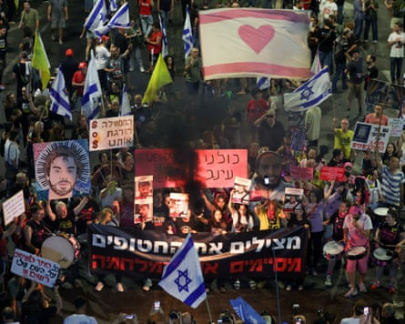
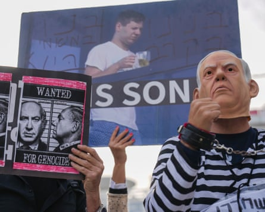

When Benjamin Netanyahu described the opportunities for peace that Israel’s successes in its brief war with Iran might bring, supporters took him at his word.
“This victory presents an opportunity for a dramatic widening of peace agreements. We are working on this with enthusiasm,” Israel’s longest-serving prime minister said on Thursday in a pre-recorded statement .
Critics of the 75-year-old leader saw something else.
“Whatever he does, he tries to turn everything to his advantage … This is a guy who never takes responsibility but only credit … Everything is opportunistic and everything is transactional,” said Prof Yossi Mekelberg at Chatham House in London.
Quite how long Netanyahu will stay in power is now a burning question in Israel , as the country recovers from the rollercoaster of fear and elation of the last weeks.
With the Iran war apparently over, the conflict in Gaza has returned to the headlines. On the day after the US declared a ceasefire, seven Israeli soldiers died in an attack on an outdated armoured vehicle in the south of the devastated territory, prompting further urgent calls within Israel for the hostilities there to be brought to a close.
Back in the headlines, too, are the deep divisions in Israeli society and within the coalition Netanyahu put together after elections in November 2022. This is the most rightwing government ever seen in Israel, and has survived multiple challenges since the 7 October 2023 Hamas raid into Israel, in which militants killed 1,200 people, mostly civilians, and took another 251 hostage.
For Prof Tamar Hermann, a specialist in public opinion at the Israel Democracy Institute , the war has changed little in terms of Israel’s polarised domestic politics.
“Netanyahu’s supporters support him even more and opponents oppose him like before. They see the [war against Iran] as very successful but don’t credit Netanyahu. He gets some points … but not so many,” Hermann said.
Netanyahu loyalists hope for a major boost in the polls.
Udi Tenne, a strategic adviser and campaign manager for ministers in the current government, said: “The operation [against Iran] led by Prime Minister Netanyahu was unquestionably justified, but it also, undeniably, benefited him politically. To put it metaphorically, the missiles launched at Iran also landed on the Israeli opposition.”
Demonstrations in support of the hostages in Gaza – and against the Israeli government – have continued (Tel Aviv, 7 June 2025, pictured). People ‘haven’t forgotten’ the 7 October Hamas attack, said one political correspondent.Photograph: Ronen Zvulun/Reuters
A key question is whether the perceived victory over Iran will convince enough voters to forget that the 2023 attack – Israel’s worst ever security failure – not only occurred on Netanyahu’s watch but can be attributed in part to policies he had pursued over a decade or more.
“Since that horrific day, Israel’s security situation has dramatically improved: the Iranian threat has been neutralised, Syria has collapsed, [the Lebanese militant group] Hezbollah has been severely damaged, and Gaza lies dismantled. We are living through a profound security transformation – and for that, great credit is due to the IDF [Israel Defense Forces] and to the government,” said Tenne.
Others are less convinced, and recent polls are inconclusive. The relatively minor gains made by Netanyahu’s ruling Likud party have largely been at the expense of other coalition parties, notably the far right, and would not necessarily guarantee a win at any election.
And a requirement for a 90-day gap between a dissolution of parliament and new elections means a snap poll would be a big risk for Netanyahu, even if his personal ratings have risen.
“People are going to give Netanyahu a lot of credit for the operation against Iran and polls show this. But they haven’t forgotten [the 7 October attack] and politics have not become less divisive,” said Lahav Harkov, a senior political correspondent at the US-based Jewish Insider.
Netanyahu’s tactical instincts have never been in doubt throughout his long and controversial career. They are still admired by his supporters and bitterly regretted by detractors. “One of his greatest political talents is he knows how to delay and come up with temporary workarounds so he can live another day,” said Harkov.
Advisers to leaders of Israel’s opposition parties said last week they were encouraged by recent polls and believed that the many other issues that have riled voters – persistent corruption allegations, Netanyahu’s ongoing graft trial, a bitter row over whether Orthodox Jews should be exemption from conscription and the rising cost of living – will come to the fore as new elections loom.
Demonstrators protested in December outside the court in Tel Aviv, where Netanyahufaced ongoing corruption charges.Photograph: Ariel Schalit/AP
Others point out that Netanyahu’s political base is far from monolithic, and that his comments about the cost to his family of the recent conflict have provoked much anger.
Netanyahu’s political demise has been often predicted, most recently in October 2023. However, he has not only retained power but consistently outmanoeuvred rivals and opponents. A bid to bring down his government was only narrowly defeated a day before he launched Israel’s warplanes against Iran.
“He desperately needed some success. I don’t think it was a coincidence that it happened as he was being cross-examined in his corruption trial,” said Mekelberg.
Loyalists have no doubt who will be in charge in the coming years. “He has returned to power with a firm grip,” said Tenne. “If David Ben-Gurion declared Israel’s independence, then it is Benjamin Netanyahu who is now securing its future.”
Netanyahu appears convinced, too. With only weeks of the parliamentary term to go before a three-month summer recess, he has at least bought himself time until the late autumn.
“I have many more objectives, and as long as I believe I can fulfilthem, I will,” he said last week.